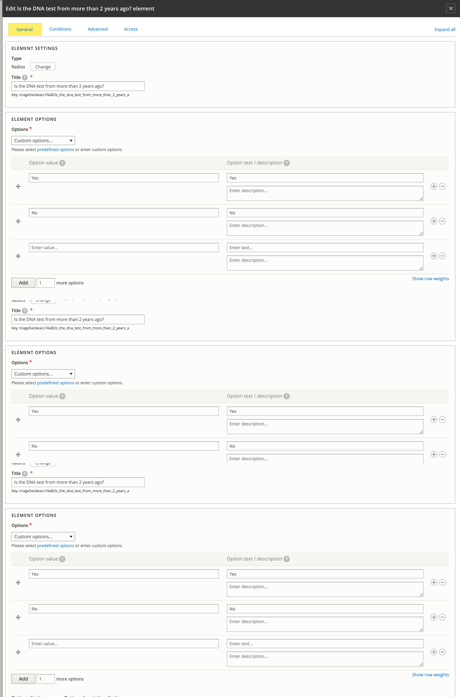
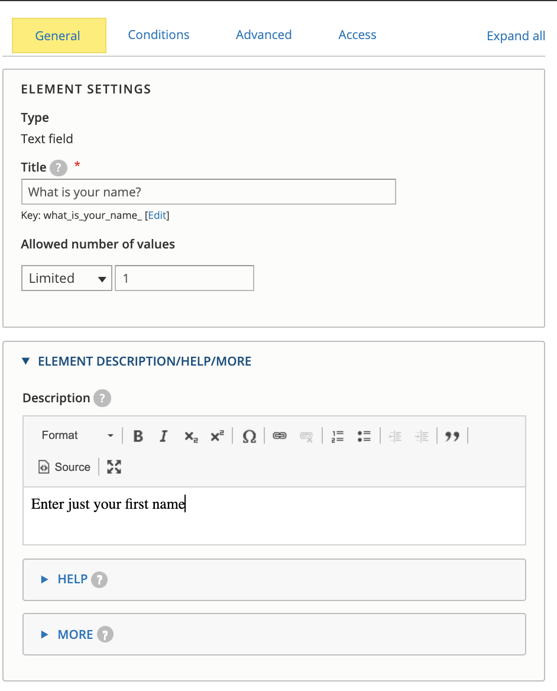
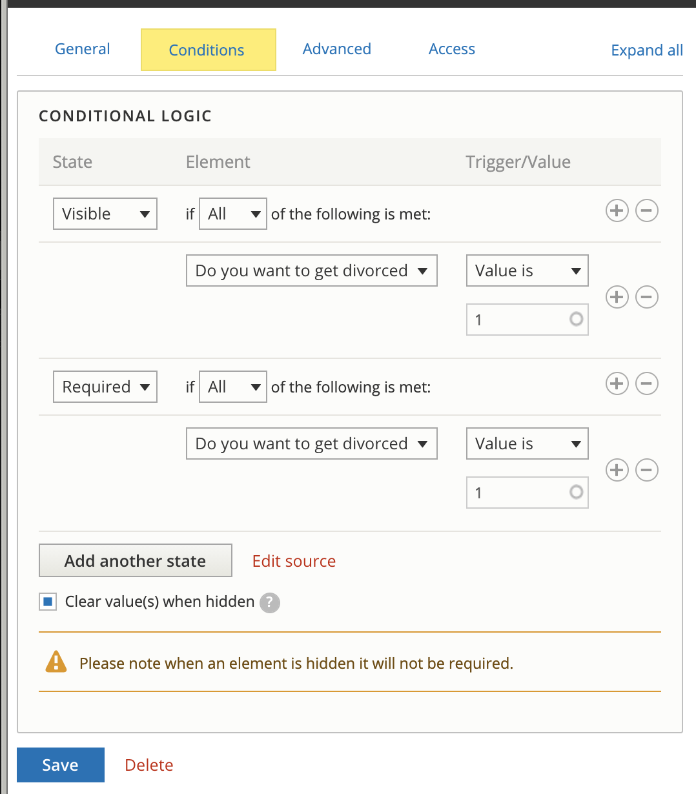

Triage rule webforms¶
We use webforms to power our triage rules. On the webform list, you will see the webforms you have access to. You can filter the list by name or element (for example, if you wanted to see all webforms that have a phone end point, you could filter on phone_end)
There are several available operations from this report:
Build - this is where you can edit your triage rule form
View - this allows you to view what users see. There are style differences between this and the OTIS pages. Also, this will not lead you to referrals or intake.
Test - this allows you to test the webform without actually submitting data
Results - this will allow you to see triage submissions. This is not tied to OTIS data but does provide a way to see triage rule only submissions.
Granting Access¶
ILAO staff must provide webform admin access per user and per webform. To do this:
Select settings from the webform
Select Access
Go to the Administer Webform & Submissions section
Use the autocomplete to add a user. Multiple users must be separated by commas.
Note
Users who have been granted permission to use a webform can also add additional users but should be careful in doing so.
Once permission is granted, the webform will appear on the list of available webforms to edit
Building a webform¶
Note
For complex logic, please work with Mike Rush to create this. The webform interface is limited to simple AND/OR conditional logic. If you need more complex logic (such as X AND (Y OR Z)), ILAO will need to hand-code that logic and the webform will not be editable via the built-in user interface.
On the build form, you will see a list of existing elements (if this is an existing webform). These can be re-ordered using the drag and drop as needed.
If you click “Add element,” you will see a long list of elements. For triage rules please limit yourself to the following elements:
checkbox
text field
radios (under option elements)
hidden
advanced HTML/text (under markup elements)
Radio Example¶
Textfield Example¶
Conditions¶
The conditions apply generally across the different types.
The two condition states we typically need to use are:
Visible: when the condition is met, the form element will be visible.
Required: when the condition is met, the form element will be required.
Types of conditions:
Checked and unchecked: Use these to test whether a radio or checkbox element has any value (checked) or if no selection has been made (unchecked).
Empty and filled: Use these to test whether a textfield has been filled out or not.
Value is/Value is not: use for radio buttons and checkboxes to specify the specific value(s) to check for.
Be sure to check Clear value(s) when hidden to prevent default data being captured and transferred.
Webform endpoints¶
See documentation for the specific endpoints required to direct completed webforms to bypass, intake, or divert points.